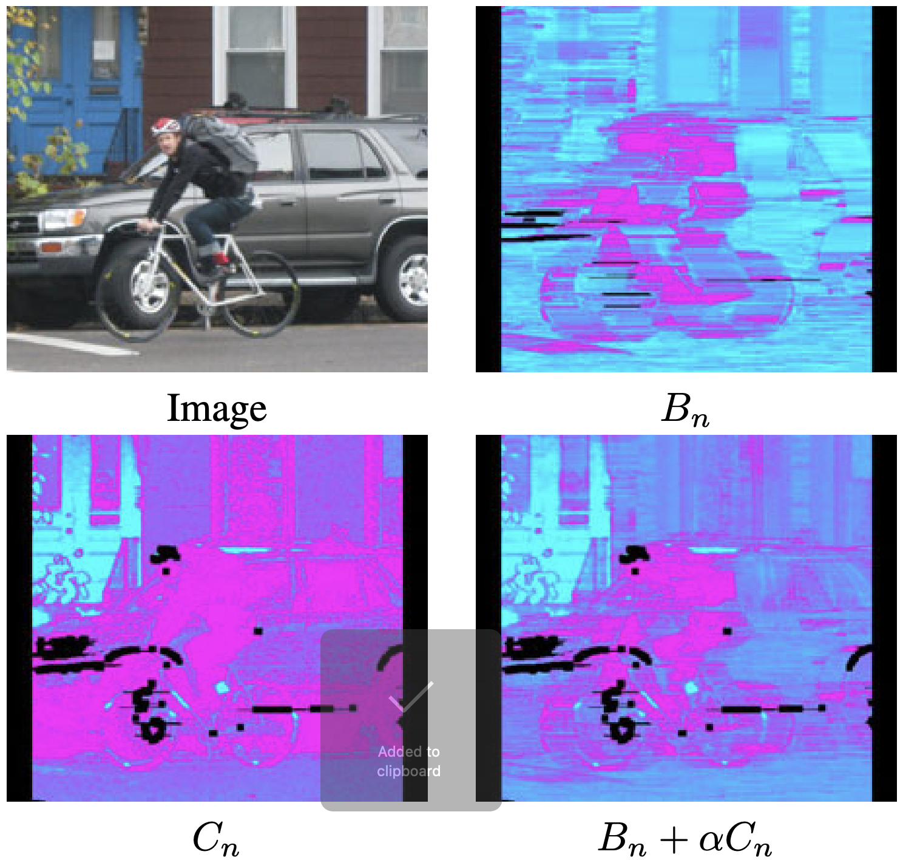

Learning to Detect Multiple Photographic Defects
WACV 2018
1. University of Virginina
2. Adobe Research
Abstract
In this paper, we introduce the problem of simultaneously detecting multiple photographic defects. We aim at detecting the existence, severity, and potential locations of common photographic defects related to color, noise, blur and composition. The automatic detection of such defects could be used to provide users with suggestions for how to improve photos without the need to laboriously try various correction methods. Defect detection could also help users select photos of higher quality while filtering out those with severe defects in photo curation and summarization. To investigate this problem, we collected a large-scale dataset of user annotations on seven common photographic defects, which allows us to evaluate algorithms by measuring their consistency with human judgments. Our new dataset enables us to formulate the problem as a multi-task learning problem and train a multi-column deep convolutional neural network (CNN) to simultaneously predict the severity of all the defects. Unlike some existing single-defect estimation methods that rely on low-level statistics and may fail in many cases on natural photographs, our model is able to understand image contents and quality at a higher level. As a result, in our experiments, we show that our model has predictions with much higher consistency with human judgments than low-level methods as well as several baseline CNN models. Our model also performs better than an average human from our user study.
Demos
Defect detection

Defect localization

Materials
|
Paper |
Supplementary material |

Poster |
Slides |
Code
Citation
@inproceedings{yu2018learning,
author = {Yu, Ning and Shen, Xiaohui and Lin, Zhe and M{\v e}ch, Radom{\' i}r and Barnes, Connelly},
title = {Learning to Detect Multiple Photographic Defects},
booktitle = {IEEE Winter Conference on Applications of Computer Vision (WACV)},
year = {2018}
}
Acknowledgement
This research is supported by Adobe Research Funding. We thank to the Flickr photographers for licensing photos under Creative Commons or public domain.
Related Work
|
S. Kong, X. Shen, Z. Lin, R. Mech, C. Fowlkes. Photo Aesthetics Ranking Network with Attributes and Content Adaptation. ECCV 2016. Comment: A ranking-based deep classifier for aesthetics assessment, similar in spirit of our design for photographic defect ranking. |
|
|
|
X. Liu, M. Tanaka, M. Okutomi. Single-Image Noise Level Estimation for Blind Denoising. TIP 2013. Comment: A denoising baseline method that does not match human judgement well on noise severity. |
|
K. He, J. Sun, X. Tang. Single Image Haze Removal Using Dark Channel Prior. PAMI 2011. Comment: A dehazing baseline method that does not match human judgement well on haze severity. |
|
|  |
A. Chakrabarti, T. Zickler, W. Freeman. Analyzing Spatially-Varying Blur. CVPR 2010. Comment: A deblurring baseline method that does not match human judgement well on blur severity. |